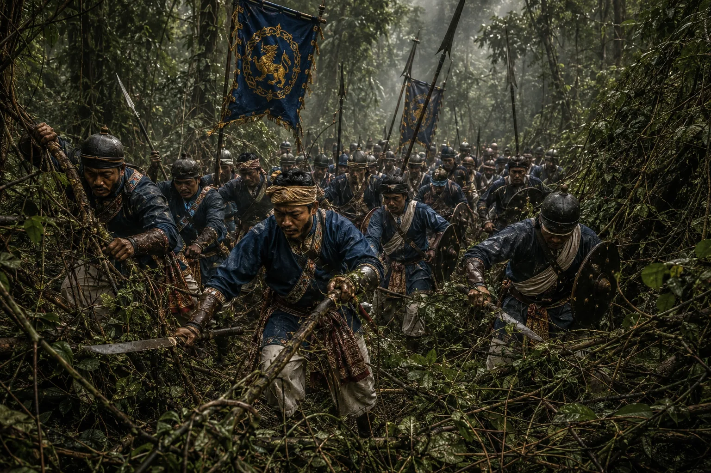

Lata-Katai Ran: The Mountain Expedition to Manipur
1765–1768 · The Tungkhungia kings

Rajeswar Singha dispatches an army across trackless, creepers-choked mountain jungles ('Lata-Katai Ran') to liberate Manipur from Burmese occupation and reinstate Meitei King Jai Singh.
Sources have not yet been catalogued for this record.
People: Bhagyachandra (Jai Singh), Haranath Bitarual Phukan, Rajeswar Singha (Suremphaa)
Open this scene in the interactive archive · Follow this event on MAP